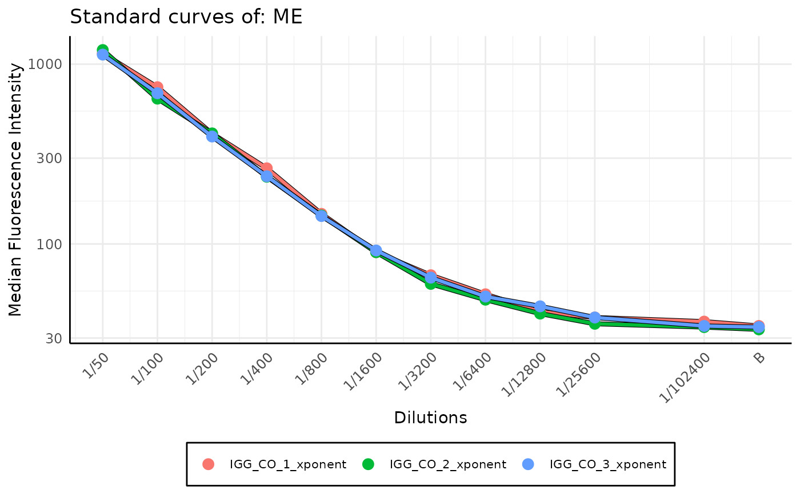

Standard curve stacked plot for levey-jennings report
Source:R/plots-standard_curve.R
plot_standard_curve_stacked.RdAs a quality control measure to detect plates with inconsistent results or drift in calibration over time, this function plots standard curves for a specified analyte across multiple plates on a single plot. It enables visual comparison of standard curves, making it easier to spot outliers or shifts in calibration. The function can be run standalone or used as part of a broader Levey-Jennings report.
Each curve represents one plate, and users can choose how colours are applied — either in a monochromatic blue gradient (indicating time-based drift) or with distinct hues for clearer differentiation.
Usage
plot_standard_curve_stacked(
list_of_plates,
analyte_name,
data_type = "Median",
decreasing_dilution_order = TRUE,
monochromatic = TRUE,
legend_type = NULL,
plot_legend = TRUE,
legend_position = "bottom",
max_legend_items_per_row = 3,
legend_text_size = 6,
sort_plates = TRUE,
log_scale = c("all"),
separate_legend = FALSE,
legend_rel_height = 0.4,
verbose = TRUE
)Arguments
- list_of_plates
list of Plate objects
- analyte_name
Name of the analyte of which standard curves we want to plot.
- data_type
Data type of the value we want to plot - the same datatype as in the plate file. By default equals to
Median- decreasing_dilution_order
If
TRUEthe dilution values are plotted in decreasing order,TRUEby default- monochromatic
If
TRUEthe color of standard curves changes from white (the oldest) to blue (the newest) it helps to observe drift in calibration of the device; otherwise, more varied colours are used,TRUEby default- legend_type
default value is
NULL, then legend type is determined based on monochromatic value. If monochromatic is equal toTRUEthen legend type is set todate, if it isFALSEthen legend type is set toplate_name. User can override this behavior by setting explicitlylegend_typetodateorplate_name.- plot_legend
If
TRUEthe legend is plotted,TRUEby default- legend_position
the position of the legend, a possible values are
c(right, bottom, left, top, none). Is not used ifplot_legendequals toFALSE.- max_legend_items_per_row
Maximum number of legend items per row when legend is at top or bottom. Default is 3.
- legend_text_size
Font size of the legend. Can be useful if plotting long plate names. Default is 8
- sort_plates
(
logical(1)) ifTRUEsorts plates by the date of examination.- log_scale
Which elements on the plot should be displayed in log scale. By default
"all". IfNULLorc()no log scale is used, if"all"orc("dilutions", "MFI")all elements are displayed in log scale.- separate_legend
If
TRUE, the legend is returned as concatatenated ggplot object.- legend_rel_height
Relative height of the legend when
separate_legendis set toTRUE.- verbose
If
TRUEprints messages,TRUEby default
Details
The function overlays all standard curves from the provided plates for the given analyte.
When monochromatic = TRUE, the curves are drawn in a blue gradient — oldest plates in light blue (almost white) and most recent ones in dark blue.
This visual encoding helps track drift in calibration over time.
When monochromatic = FALSE, colours are selected from a hue palette to ensure distinct appearance,
especially useful when comparing many plates simultaneously.
The legend_type determines how curves are identified in the legend. By default, it adapts based on the monochromatic setting.
If the legend becomes crowded (e.g., with long plate names), use max_legend_items_per_row and legend_text_size to improve layout and readability.
Examples
# creating temporary directory for the example
output_dir <- tempdir(check = TRUE)
dir_with_luminex_files <- system.file("extdata", "multiplate_reallife_reduced",
package = "SerolyzeR", mustWork = TRUE
)
list_of_plates <- process_dir(dir_with_luminex_files,
return_plates = TRUE, format = "xPONENT", output_dir = output_dir
)
#> Reading Luminex data from: /home/runner/work/_temp/Library/SerolyzeR/extdata/multiplate_reallife_reduced/IGG_CO_1_xponent.csv
#> using format xPONENT
#> Failed to extract from BatchMetadata: BatchStartTime not found in BatchMetadata.
#> Failed to extract from raw header: BatchStartTime not found in raw header.
#> Fallback datetime successfully extracted from ProgramMetadata.
#> Could not parse datetime string using default datetime format. Trying other possibilies.
#> Successfully parsed datetime string using order: mdY IM p
#>
#> New plate object has been created with name: IGG_CO_1_xponent!
#>
#> Processing plate 'IGG_CO_1_xponent'
#> Reading Luminex data from: /home/runner/work/_temp/Library/SerolyzeR/extdata/multiplate_reallife_reduced/IGG_CO_2_xponent.csv
#> using format xPONENT
#> Failed to extract from BatchMetadata: BatchStartTime not found in BatchMetadata.
#> BatchStartTime successfully extracted from the header.
#> Could not parse datetime string using default datetime format. Trying other possibilies.
#> Successfully parsed datetime string using order: mdY IMS p
#>
#> New plate object has been created with name: IGG_CO_2_xponent!
#>
#> Processing plate 'IGG_CO_2_xponent'
#> Reading Luminex data from: /home/runner/work/_temp/Library/SerolyzeR/extdata/multiplate_reallife_reduced/IGG_CO_3_xponent.csv
#> using format xPONENT
#> Failed to extract from BatchMetadata: BatchStartTime not found in BatchMetadata.
#> BatchStartTime successfully extracted from the header.
#> Could not parse datetime string using default datetime format. Trying other possibilies.
#> Successfully parsed datetime string using order: mdY IMS p
#>
#> New plate object has been created with name: IGG_CO_3_xponent!
#>
#> Processing plate 'IGG_CO_3_xponent'
#> Extracting the raw MFI to the output dataframe
#> Extracting the raw MFI to the output dataframe
#> Extracting the raw MFI to the output dataframe
#> Merged output saved to: /tmp/RtmpZdvZIB/merged_MFI_20260117_182621.csv
#> Fitting the models and predicting RAU for each analyte
#> Fitting the models and predicting RAU for each analyte
#> Fitting the models and predicting RAU for each analyte
#> Merged output saved to: /tmp/RtmpZdvZIB/merged_RAU_20260117_182621.csv
#> Computing nMFI values for each analyte
#> Computing nMFI values for each analyte
#> Computing nMFI values for each analyte
#> Merged output saved to: /tmp/RtmpZdvZIB/merged_nMFI_20260117_182621.csv
plot_standard_curve_stacked(list_of_plates, "ME", data_type = "Median", monochromatic = FALSE)
